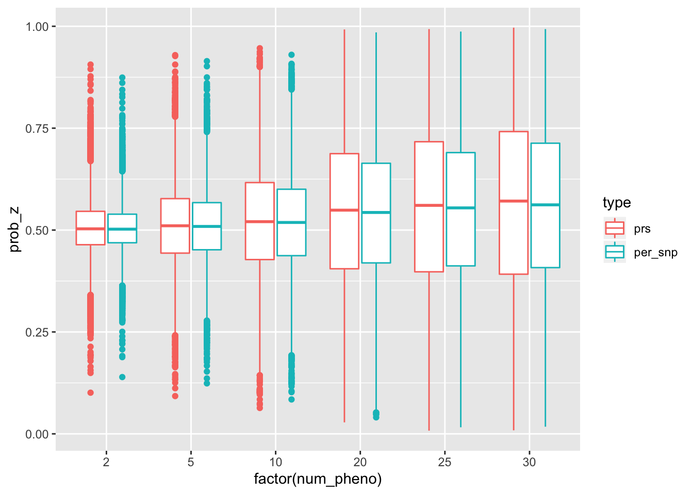

\[ \newcommand{\E}{\text{E}} \newcommand{\diag}{\text{diag}} \]
Here we try the idea of per-SNP likelihood. By per-SNP likelihood, I mean a likelihood (for one individual) takes the form: \(\Pr(y | X; \theta) = \Pr(y | X_1; \theta_1) \Pr(y | X_2; \theta_2) \cdots \Pr(y | X_p; \theta_p)\). For the sake of simplicity, I focus on the case that \(\Pr(y | X_j; \theta_j)\) is characterized by the model \(y = X_j \beta_j + \epsilon_j, \epsilon_j \sim N(0, \sigma_j^2)\).
As the note of the EM on-the-fly, I sketch the formulas for EM implementations. At the minimal, it is technical note to explicitly write down what to be implemented and why in principle.
Essentially, the only difference between what we try to do here and the previous note is about how we evaluate the likelihood. And on the top of that, how to do M step. So, for the sake of completeness, I sketch the (log-)likelihood and its derivatives.
\[\begin{aligned} \Pr(y^f, y^m, Z | H^1, H^2; \theta) &= \prod_{i = 1}^n \Pr(y_i^f, y_i^m, Z_i | H_i^1, H_i^2; \theta) \\ &= \prod_{i = 1}^n \Pr(y_i^f, y_i^m | Z_i, H_i^1, H_i^2; \theta) \Pr(Z_i) \\ \log \Pr(y^f, y^m, Z | H^1, H^2; \theta) &= \sum_i \log \Pr(y_i^f, y_i^m | Z_i, H_i^1, H_i^2; \theta) + \log \Pr(Z_i) \\ &= \sum_i \log \Pr(y_i^f | Z_i, H_i^1, H_i^2; \theta^f) + \log \Pr(y_i^m | Z_i, H_i^1, H_i^2; \theta^m) + \log \Pr(Z_i) \end{aligned}\]
Taking father as example.
\[\begin{aligned} \log \Pr(y_i^f | Z_i, H_i^1, H_i^2; \theta^f) &= - \frac{1}{2} \sum_{l \in \text{all loci}} Z_i [ ~ \log \sigma_{f,l}^2 + \frac{(y_i^f - H_{i,l}^1 \beta_{l}^f)^2}{\sigma_{f,l}^2} ~] + (1 - Z_i) [~ \log \sigma_{f,l}^2 + \frac{(y_i^f - H_{i,l}^2 \beta_{l}^f)^2}{\sigma_{f,l}^2} ~] \\ &= - \frac{1}{2} \sum_{l \in \text{all loci}} \log \sigma_{f, l}^2 + Z_i \frac{(y_i^f - H_{i,l}^1 \beta_{l}^f)^2}{\sigma_{f,l}^2} + (1 - Z_i) \frac{(y_i^f - H_{i,l}^2 \beta_{l}^f)^2}{\sigma_{f,l}^2} \end{aligned}\]
Let \(\E_{Z|y, H, \theta^{(t)}}[Z_i] = \gamma_i\)
\[\begin{aligned} \E_{Z | y, H, \theta^{(t)}} [~ \log \Pr(y_i^f | Z_i, H_i^1, H_i^2; \theta^f) ~] &= - \frac{1}{2} \sum_{l \in \text{all loci}} \log \sigma_{f, l}^2 + \E[Z_i] \frac{(y_i^f - H_{i,l}^1 \beta_{l}^f)^2}{\sigma_{f,l}^2} + (1 - \E[Z_i]) \frac{(y_i^f - H_{i,l}^2 \beta_{l}^f)^2}{\sigma_{f,l}^2} \\ &= - \frac{1}{2} \sum_{l \in \text{all loci}} \log \sigma_{f, l}^2 + \gamma_i \frac{(y_i^f - H_{i,l}^1 \beta_{l}^f)^2}{\sigma_{f,l}^2} + (1 - \gamma_i) \frac{(y_i^f - H_{i,l}^2 \beta_{l}^f)^2}{\sigma_{f,l}^2} \end{aligned}\]
\[\begin{aligned} l_{1, i}^j &= \sum_{l \in \text{all loci}} \frac{(y_i^j - H_{i,l}^1 \beta_{l}^j)^2}{\sigma_{j,l}^2} \\ l_{0, i}^j &= \sum_{l \in \text{all loci}} \frac{(y_i^j - H_{i,l}^2 \beta_{l}^j)^2}{\sigma_{j,l}^2} \\ \gamma_i &= \frac{e^{l_{1,i}^f + l_{1, i}^m} \Pr(Z_i = 1)}{e^{l_{1,i}^f + l_{1, i}^m} \Pr(Z_i = 1) + e^{l_{0,i}^f + l_{0, i}^m} \Pr(Z_i = 0)} \end{aligned}\]
\[\begin{aligned} \beta^j, \sigma_j^2 &= \arg \max_{\beta, \sigma^2} - \frac{1}{2} \sum_i \sum_{l \in \text{all loci}} \log \sigma_{l}^2 + \gamma_i \frac{(y_i^j - H_{i,l}^1 \beta_{l})^2}{\sigma_{l}^2} + (1 - \gamma_i) \frac{(y_i^j - H_{i,l}^2 \beta_{l})^2}{\sigma_{l}^2} \\ &= \arg \max_{\beta, \sigma^2} - \frac{1}{2} \sum_{l \in \text{all loci}} \sum_i \log \sigma_{l}^2 + \gamma_i \frac{(y_i^j - H_{i,l}^1 \beta_{l})^2}{\sigma_{l}^2} + (1 - \gamma_i) \frac{(y_i^j - H_{i,l}^2 \beta_{l})^2}{\sigma_{l}^2} \\ \beta_l^j, \sigma_{j,l}^2 &= \arg\max_{\beta, \sigma^2} -\frac{1}{2} \sum_i \log \sigma^2 + \gamma_i \frac{(y_i^j - H_{i,l}^1 \beta)^2}{\sigma^2} + (1 - \gamma_i) \frac{(y_i^j - H_{i,l}^2 \beta)^2}{\sigma^2} \end{aligned}\]
Essentially, it corresponds to solve weighted least squares which corresponds to the following update rule.
\[\begin{aligned} \Gamma &= \begin{bmatrix} \gamma & 0 \\ 0 & (1 - \gamma) \end{bmatrix} \\ X^f &= \begin{bmatrix} H^1 \\ H^2 \end{bmatrix} \\ X^m &= \begin{bmatrix} H^2 \\ H^1 \end{bmatrix} \\ Y^j &= \begin{bmatrix} y^j \\ y^j \end{bmatrix} \\ \widetilde{X}^j &= \sqrt{\Gamma} X^j \\ \widetilde{Y}^j &= \sqrt{\Gamma} Y^j \\ \beta_l^j &= ((\widetilde{X}^j_l)' \widetilde{X}^j_l)^{-1} \widetilde{X}_l' \widetilde{Y}^j \\ \sigma_{j, l}^2 &= \frac{(\widetilde{Y}^j)' \widetilde{Y}^j - \beta_l^j (\widetilde{X}^j_l)' \widetilde{Y}^j}{n} \end{aligned}\]
The matrix form is as follow.
\[\begin{aligned} \beta^j &= \diag((\widetilde{X}^j)'\widetilde{X}^j)^{-1} (\widetilde{X}^j)' \widetilde{Y}^j \\ \sigma_j^2 &= \frac{(\widetilde{Y}^j)'(\widetilde{Y}^j) - (\widetilde{X}^j)' \diag(\beta) \widetilde{Y}}{n} \end{aligned}\]
Now I simulate some data to test the EM implementation.
Mostly reuse the scheme in init_idea_outline. It contains the following steps:
Some parameter settings:
sample_size = 10000
n_pheno = 30
prior_causal = 0.4
causal_sigma = 1
n_snp = 20
heritabiltiy = 0.01
maf_low = 0.05
maf_high = 0.45Simulation.
source('../code/rlib_simulation.R')maf = get_maf(n_snp, maf_low, maf_high)
h_father = sim_hap(sample_size, n_snp, maf)
h_mother = sim_hap(sample_size, n_snp, maf)
h_child = transmit_haplo(h_father, h_mother)
effect_size = matrix(spike_and_slab(n_snp * n_pheno, 1 - prior_causal, causal_sigma), nrow = n_snp, ncol = n_pheno)
y_father = simulate_pheno(h_father, effect_size, heritabiltiy, maf)
y_mother = simulate_pheno(h_mother, effect_size, heritabiltiy, maf)h1 = h_child[[1]]
h2 = h_child[[2]]
df_z = list()
for(np in c(2, 5, 10, 20, 25, 30)) {
message('Working on num_pheno = ', np)
source('../code/rlib_em_otf.R')
o = em_algorithm_otf(y_father[, 1 : np], y_mother[, 1 : np], h1, h2, maxiter = 50)
source('../code/rlib_em_per_snp.R')
o2 = em_per_snp(y_father[, 1 : np], y_mother[, 1 : np], h1, h2, maxiter = 3)
df_z[[length(df_z) + 1]] = data.frame(prob_z = o$gamma, num_pheno = np, type = 'prs', snp = 1 : length(o$gamma))
df_z[[length(df_z) + 1]] = data.frame(prob_z = o2$prob_z, num_pheno = np, type = 'per_snp', snp = 1 : length(o2$prob_z))
}## Working on num_pheno = 2## Working on num_pheno = 5## Working on num_pheno = 10## Working on num_pheno = 20## Working on num_pheno = 25## Working on num_pheno = 30df_z = do.call(rbind, df_z)library(dplyr)
library(ggplot2)
library(data.table)
df_z %>% ggplot() + geom_boxplot(aes(x = factor(num_pheno), y = prob_z, color = type))
df_z %>% group_by(num_pheno, type) %>% summarize(S_bar = mean(prob_z ^ 2 + (1 - prob_z) ^ 2), mean_prob_z = mean(prob_z)) %>% mutate(power_ratio = mean_prob_z / sqrt(S_bar))## # A tibble: 12 x 5
## # Groups: num_pheno [6]
## num_pheno type S_bar mean_prob_z power_ratio
## <dbl> <fct> <dbl> <dbl> <dbl>
## 1 2 prs 0.512 0.505 0.706
## 2 2 per_snp 0.509 0.505 0.707
## 3 5 prs 0.523 0.511 0.707
## 4 5 per_snp 0.518 0.510 0.709
## 5 10 prs 0.540 0.522 0.710
## 6 10 per_snp 0.532 0.520 0.713
## 7 20 prs 0.577 0.543 0.715
## 8 20 per_snp 0.562 0.539 0.719
## 9 25 prs 0.594 0.553 0.717
## 10 25 per_snp 0.577 0.548 0.722
## 11 30 prs 0.608 0.561 0.720
## 12 30 per_snp 0.589 0.556 0.725df_z %>% reshape2::dcast(snp + num_pheno ~ type, value.var = 'prob_z') %>% ggplot() +
geom_point(aes(x = prs, y = per_snp), alpha = .1) + facet_wrap(~num_pheno) +
geom_abline(slope = 1, intercept = 0, color = 'red')df_z %>% ggplot() + geom_density(aes(x = prob_z, color = type)) + facet_wrap(~num_pheno, scales = 'free_y')